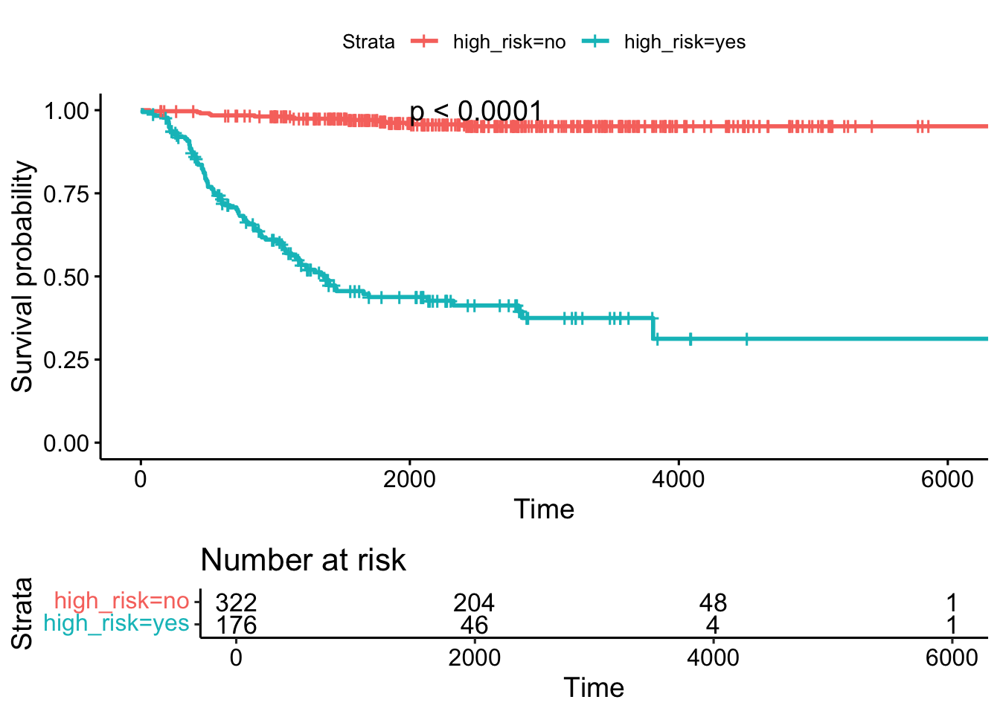
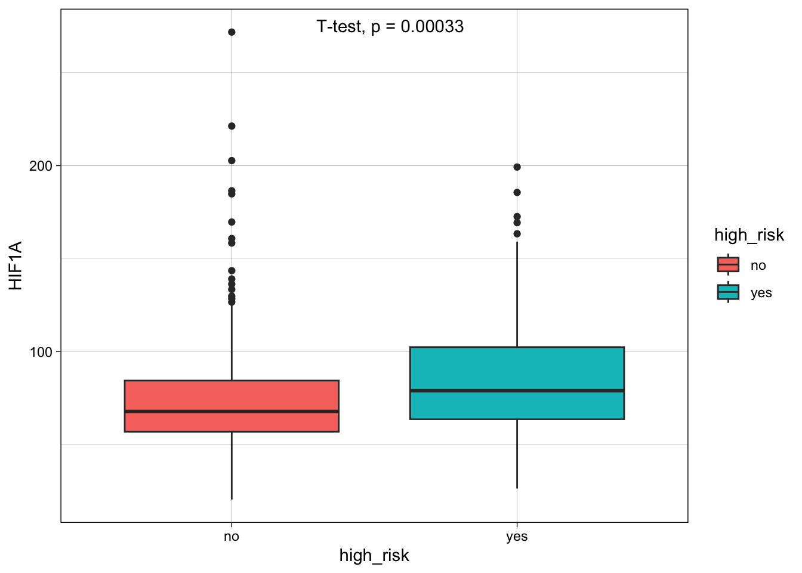
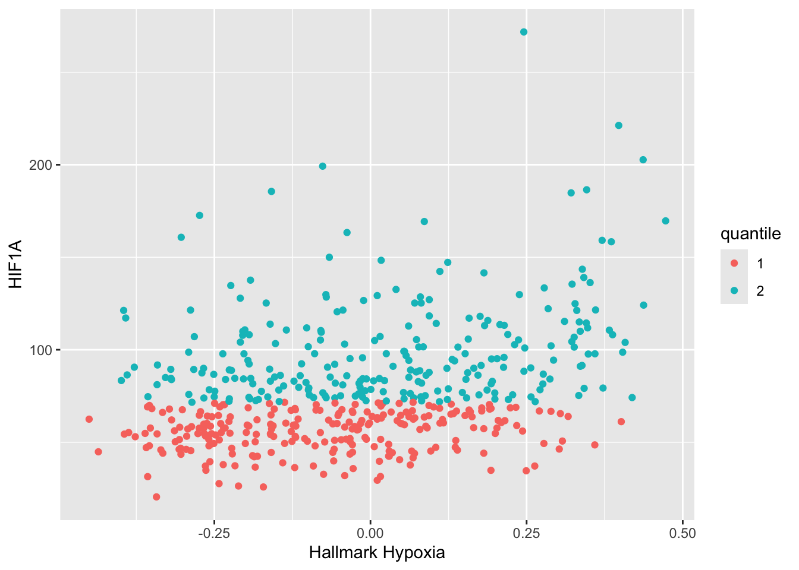
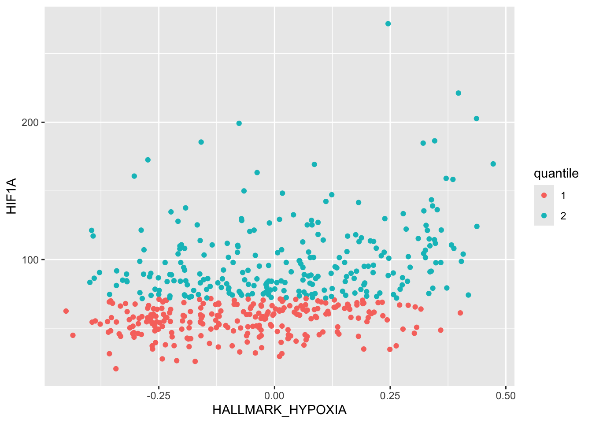
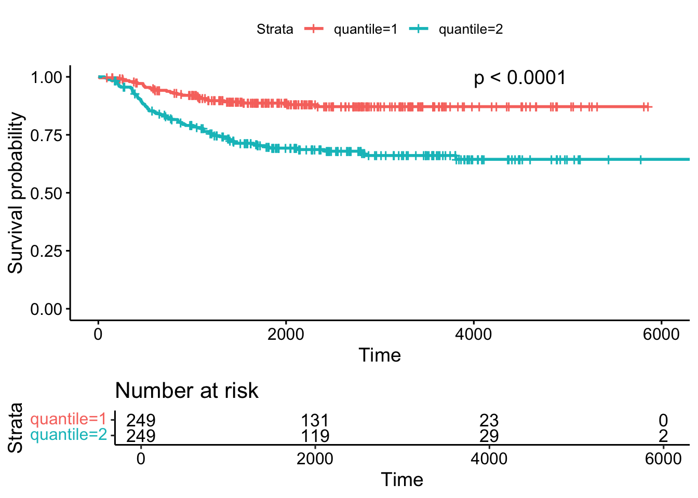
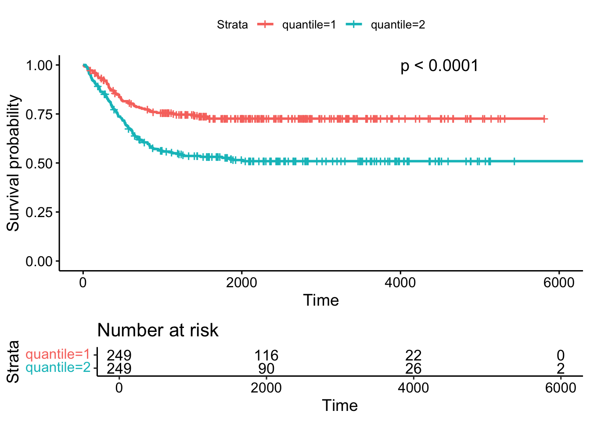
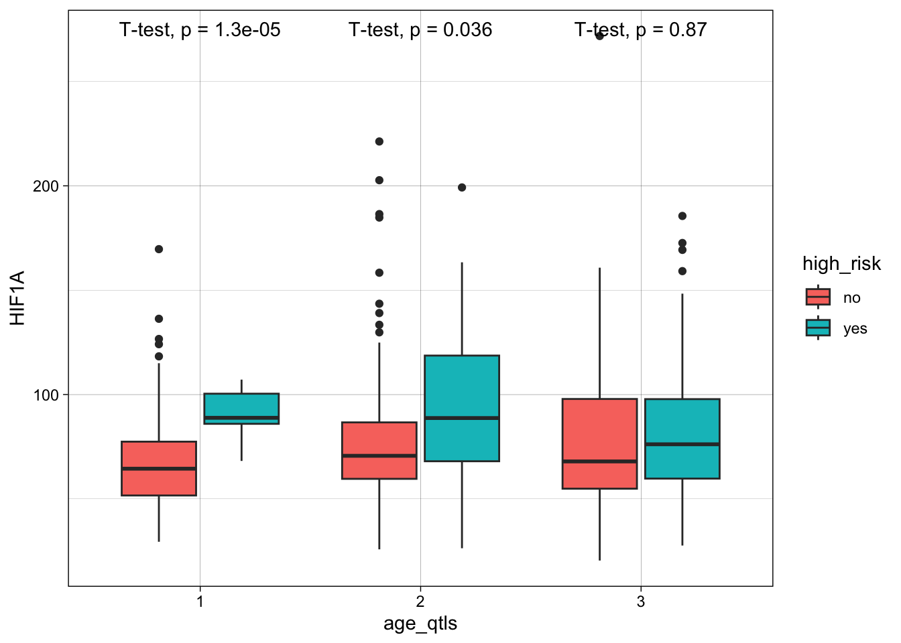

4 Análise de Sobrevivência
Na análise de sobrevivência estudamos como varia a probabilidade de sobrevivência dos pacientes em função do tempo transcorrido desde o início de um estudo. Na atividade proposta para este módulo, vamos avaliar como é a probabilidade de sobrevivência de pacientes de neuroblastoma em função do status de alto risco (se um paciente é de alto risco ou baixo risco). Para dar prosseguimento, carregamos a dataframe de neuroblastoma no ambiente R, como fizemos no módulo anterior:
r2_gse62564_GSVA_Metadata <- readRDS( "./data/r2_gse62564_GSVA_Metadata.rds")4.1 Processamento de variáveis para permitir a construção de gráficos
Precisamos definir o status do OS (Overall Survival = sobrevivência geral) como numérico, em vez de um caractere. Fazemos o mesmo para o status EFS (Event Free Survival = sobrevivência livre de evento).
Usamos o método ifelse para construir os_bin_numeric a partir de os_bin, introduzindo números ao invés da palavra evento e não evento. No caso do Overall Survival (OS), a morte do paciente é o evento.
Para usar o comando a seguir, precisamos de usar, antes, uma biblioteca do R chamada maditr:
##
## To get total summary skip 'by' argument: take_all(mtcars, mean)##
## Attaching package: 'maditr'## The following object is masked from 'package:base':
##
## sort_byAgora podemos usar o operador pipe (%>%), que toma o resultado de um comando e passa para o próximo comando:
r2_gse62564_GSVA_Metadata <- r2_gse62564_GSVA_Metadata %>%
dplyr::mutate(os_bin_numeric =
ifelse(r2_gse62564_GSVA_Metadata$os_bin == "event", "1", "0"))Agora, fazemos os_bin_numeric numérico:
r2_gse62564_GSVA_Metadata["os_bin_numeric"] <- as.numeric(r2_gse62564_GSVA_Metadata$os_bin_numeric)Fazemos o mesmo para EFS:
## EFS
r2_gse62564_GSVA_Metadata <- r2_gse62564_GSVA_Metadata %>%
dplyr::mutate(efs_bin_numeric =
ifelse(r2_gse62564_GSVA_Metadata$efs_bin == "event", "1", "0"))Agora, fazemos efs_bin_numeric, numérico:
r2_gse62564_GSVA_Metadata["efs_bin_numeric"] <- as.numeric(r2_gse62564_GSVA_Metadata$efs_bin_numeric)4.2 Fazendo a análise de sobrevivência
4.2.1 Construção da curva de sobrevivência
Usamos a função survfit do pacote em R, survival, para construir o objeto fit_os_high_risk, ajustando o modelo:
library(survival)
fit_os_high_risk <- survfit(Surv(as.numeric(os_day), os_bin_numeric) ~ r2_gse62564_GSVA_Metadata$high_risk,
data = r2_gse62564_GSVA_Metadata)Observe que os_day é uma variável contendo o número de dias até o evento de interesse.
4.2.2 Plotagem da curva de sobrevivência
Usamos a função ggsurvplot do pacote em R survminer para plotar a curva de sobrevivência:
## Loading required package: ggpubr##
## Attaching package: 'survminer'## The following object is masked from 'package:survival':
##
## myeloma
ggsurvplot(fit_os_high_risk,
data = r2_gse62564_GSVA_Metadata,
risk.table = TRUE,
# risk.table = "abs_pct",
pval = TRUE,
pval.coord = c(2000, 1),
)
4.2.3 Hipóxia no microambiente tumoral
Vamos agora procurar estabelecer uma relação entre hipóxia e neuroblastoma de alto risco. Chama-se hipóxia à condição de baixa concentração de oxigênio que se estabelece no microambiente do tumor à medida que o câncer progride.
HIF1A é um fator de transcrição sensível aos níveis de oxigênio. Precisamos tornar a coluna HIF1A (variável), numérica, como fizemos com MYCN acima:
r2_gse62564_GSVA_Metadata$HIF1A <- as.numeric(r2_gse62564_GSVA_Metadata$HIF1A)Compare as médias de HIF1A entre os grupos de alto risco usando ggplot2:
ggplot(r2_gse62564_GSVA_Metadata, aes(x=high_risk, y=HIF1A, fill=high_risk)) +
geom_boxplot()+
stat_compare_means(method = "t.test", label.x = 1.4)+
theme_linedraw()
Vemos que para este conjunto de dados, a expressão de HIF1A é maior no grupo de alto risco, o que está de acordo com a noção de que aumento da hipóxia leva a maior malignidade na progressão tumoral.
4.2.4 Análise de sobrevivência do gene da hipóxia
Como vemos que indivíduos de alto risco apresentam maior expressão de HIF1A, vamos analisar também a análise de sobrevivência de HIF1A. Para isso vamos separar em dois grupos de pacientes, baseados na expressão do HIF1A. Construindo a variável HIF1A em dois quantis, um com alta expressão de HIF1A e um com baixa expressão de HIF1A. Para isso vamos usar a função ntile() do pacote tidyverse:
## ── Attaching core tidyverse packages ──────────────────────── tidyverse 2.0.0 ──
## ✔ dplyr 1.1.4 ✔ readr 2.1.5
## ✔ forcats 1.0.0 ✔ stringr 1.5.1
## ✔ lubridate 1.9.3 ✔ tibble 3.2.1
## ✔ purrr 1.0.2 ✔ tidyr 1.3.1
## ── Conflicts ────────────────────────────────────────── tidyverse_conflicts() ──
## ✖ dplyr::between() masks maditr::between()
## ✖ dplyr::coalesce() masks maditr::coalesce()
## ✖ readr::cols() masks maditr::cols()
## ✖ dplyr::filter() masks stats::filter()
## ✖ dplyr::first() masks maditr::first()
## ✖ dplyr::lag() masks stats::lag()
## ✖ dplyr::last() masks maditr::last()
## ✖ purrr::transpose() masks maditr::transpose()
## ℹ Use the conflicted package (<http://conflicted.r-lib.org/>) to force all conflicts to become errorsFazendo da variável quantil HIF1A um fator
r2_gse62564_GSVA_Metadata$quantile <- as.factor(r2_gse62564_GSVA_Metadata$quantile )Gráfico de dispersão HALLMARK HYPOXIA vs. HIF1A
r2_gse62564_GSVA_Metadata$HALLMARK_HYPOXIA <- as.numeric(r2_gse62564_GSVA_Metadata$HALLMARK_HYPOXIA)
qplot(HALLMARK_HYPOXIA, HIF1A,
data = r2_gse62564_GSVA_Metadata,
colour=quantile,
ylab = "HIF1A",
xlab = "Hallmark Hypoxia")## Warning: `qplot()` was deprecated in ggplot2 3.4.0.
## This warning is displayed once every 8 hours.
## Call `lifecycle::last_lifecycle_warnings()` to see where this warning was
## generated.
library(ggplot2)
# Basic scatter plot
ggplot(r2_gse62564_GSVA_Metadata, aes(x=HALLMARK_HYPOXIA, y=HIF1A, color=quantile)) + geom_point()
Vemos que o quantil 2 tem valores de expressão de HIF1A maiores que os valores do quantil 1.
Construímos o objeto de sobrevivência ajustado com a variável quantil HIF1A:
library(survival)
fit_os_HIF1A <- survfit(Surv(as.numeric(os_day), os_bin_numeric) ~ r2_gse62564_GSVA_Metadata$quantile,
data = r2_gse62564_GSVA_Metadata)E finalmente traçamos a curva de sobrevivência do gráfico do Overall Survival:
library(survminer)
ggsurvplot(fit_os_HIF1A,
data = r2_gse62564_GSVA_Metadata,
risk.table = TRUE,
# risk.table = "abs_pct",
pval = TRUE,
pval.coord = c(4000, 1),
)
Observamos que os maiores valores na expressão de HIF1A (segundo quantil ou quantil 2. No inglês é second quantile) levam a menor probabilidade de sobrevivência. Vemos que no dataset, o segundo quantil tem menores probabilidades de sobrevivência.
4.2.4.1 Event-free survival
Construímos a variável quantil HIF1A:
library(tidyverse)
r2_gse62564_GSVA_Metadata <- r2_gse62564_GSVA_Metadata %>%
mutate(quantile = ntile(HIF1A, 2))Construímos objeto de sobrevivência EFS, fit_efs_HIF1A
library(survival)
fit_efs_HIF1A <- survfit(Surv(as.numeric(efs_day), efs_bin_numeric) ~ r2_gse62564_GSVA_Metadata$quantile,
data = r2_gse62564_GSVA_Metadata)Curva de sobrevivência do gráfico EFS, usando a função ggsurvplot
library(survminer)
ggsurvplot(fit_efs_HIF1A,
data = r2_gse62564_GSVA_Metadata,
risk.table = TRUE,
# risk.table = "abs_pct",
pval = TRUE,
pval.coord = c(4000, 1),
)
4.2.5 Relação do HIF1A com a idade no diagnóstico
Precisamos criar o objeto r2_gse62564_GSVA_Metadata_Spaces_survival
A função compare_means não consegue lidar com espaços no nome da variável de exaustão de células T.
Teremos que usar um truque para lidar com os espaços em “T cell exhaustion”.
Usaremos o pacote stringr para inserir pontos (.) substituindo os espaços no dataframe r2_gse62564_GSVA_Metadata.
r2_gse62564_GSVA_Metadata_Spaces <- r2_gse62564_GSVA_Metadata
library(stringr)
names(r2_gse62564_GSVA_Metadata_Spaces)<-str_replace_all(names(r2_gse62564_GSVA_Metadata_Spaces), c(" " = "." , "," = "" ))Criando o objeto r2_gse62564_GSVA_Metadata_Spaces_survival:
r2_gse62564_GSVA_Metadata_Spaces_survival <- r2_gse62564_GSVA_Metadata_SpacesFazendo age_at_diagnosis numérico para plotar os quantis
r2_gse62564_GSVA_Metadata_Spaces_survival$age_at_diagnosis <- as.numeric(r2_gse62564_GSVA_Metadata_Spaces_survival$age_at_diagnosis)Verificando a idade máxima no diagnóstico
max(r2_gse62564_GSVA_Metadata_Spaces_survival$age_at_diagnosis)## [1] 8983
min(r2_gse62564_GSVA_Metadata_Spaces_survival$age_at_diagnosis)## [1] 0Construir quantis para a idade no diagnóstico (age_qtls)
r2_gse62564_GSVA_Metadata_Spaces_survival_age <- r2_gse62564_GSVA_Metadata_Spaces_survival %>%
mutate(age_qtls = ntile(age_at_diagnosis, 3))Faça age_qtls como fator
r2_gse62564_GSVA_Metadata_Spaces_survival_age$age_qtls <- as.factor(r2_gse62564_GSVA_Metadata_Spaces_survival_age$age_qtls)Gráfico age_qtls vs. HIF1A
ggplot(r2_gse62564_GSVA_Metadata_Spaces_survival_age, aes(x=age_qtls, y=HIF1A, fill=high_risk)) +
geom_boxplot()+
stat_compare_means(method = "t.test")+
theme_linedraw()